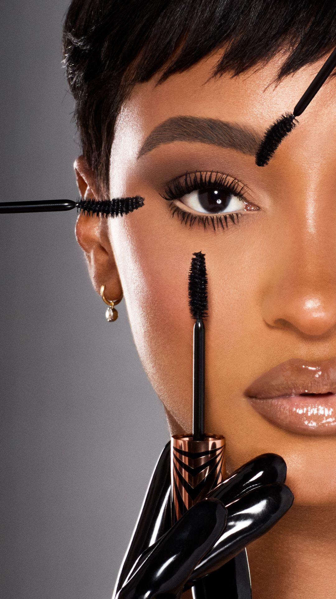

Our Story
Nifty Makeup started with a love for makeup and the joy of helping people ,feel good about themselves. we wanted to create a place where clients can get makeup looks that suits their style, personality,and special occasions. we believe makeup doesn't have to change who you are it can simply bring out the features you already love.our aim is to make every clints feel comfortable,confident,happy with their look.

Our Mission
Our Mission is to make makeup services affordable,comfortable,and enjoyable for everyone.we want each client to feel listened to and leave happy with a look that suit their personality and the occasion. we also care about keeping our tools clean and making sure every client feels comfortable throughout the experience.
Our Vision
We hope to build Nifty Makeup into a place where clients feel comfortable, trust our work, and enjoy coming back. We want to build lasting relationships with our clients, keep improving our skills, and become a makeup studio people are happy to recommend to others.
Why Choose Nifty Makeup?
At Nifty Makeup, we want you to feel comfortable and enjoy the whole makeup experience. we take time to understand what you like and the kind of look you want.we also believe that good makeup doesn't have to be expensive. what matters to us is that you love your final look and feel good wearing it.
- Affordable Prices
- Makeup looks based on what you like
- Clean makeup tools and products
- Taking time to get the look right
Our Values
- Creativity: we enjoy trying diffrent looks and learning new techniques
- Respect: every one has their own style,and we respect what each client wants
- Cleanliness: we make sure our makeup tools are clean before using them
- Honesty: we want our clients to feel comfortable telling us what they like or don't like
- Care: we want every person who visits us to feel welcomed and appreciated